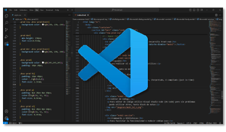

Desarrollo Front-End
Diseño y desarrollo soluciones web y móviles personalizadas
utilizando tecnologías como HTML, CSS, JavaScript, Bootstrap y React.
Me enfoco en crear interfaces de usuario intuitivas, responsivas y accesibles.
Desarrollo de Páginas Web
Estas son las principales acciones que realizo:
- Diseño y Desarrollo
- Diseño UI y UX
- Mantenimiento y Asesoramiento
Desarrollo de Aplicaciones
Estas son las principales acciones que realizo:
- Desarrollo de Aplicaciones Web
- Diseño de Interfaces (UI y UX)
- Mantenimiento y Asesoramiento
Herramientas de Desarrollo Front-End
Estas son algunas de las herramientas que utilizo para el desarrollo front-end
- Lenguajes: HTML, CSS, JavaScript
- Editores de Código: Visual Studio Code (VS Code)
- Frameworks y Bibliotecas: React, Bootstrap
- Gestión de Versiones: Git Bash, GitHub
Herramientas de Desarrollo Front-end
Lenguajes
Para realizar el código front-end utilizo:
- HTML para su estructura
- CSS para el diseño
- Java Script como lenguaje ligero, iterpretado, ó compilado (just-in-time)
Editor de Código
Para editor de código utilizo Visual Studio Code (VS Code) pero sin problemas puedo utilizar otros, hasta block de notas
Frameworks y Bibliotecas
Para facilitar la funcionalidad y reducir código uso:
- React: para crear interfaces de usuario con el objetivo de facilitar el desarrollo de aplicaciones en una sola página
- Bootstrap: como framework de código abierto que permite crear sitios web y aplicaciones móviles responsivas de manera rápida y sencilla
Gestión de Versiones
Utilizo aplciaciones y plataformas para el control de versiones de código y almacenamiento como:
- Git Bash
- GitHub